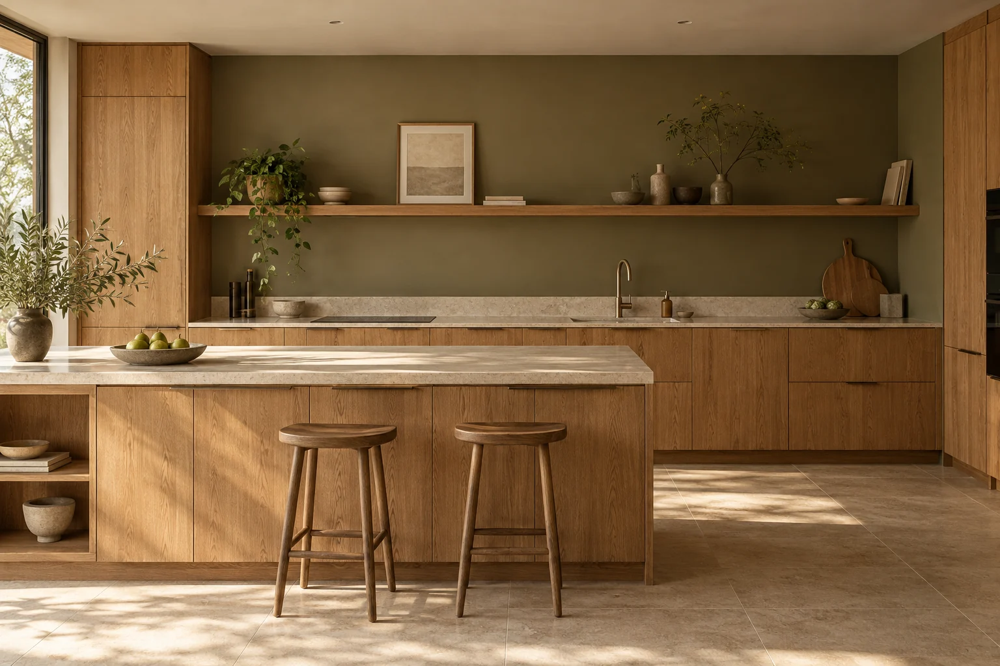
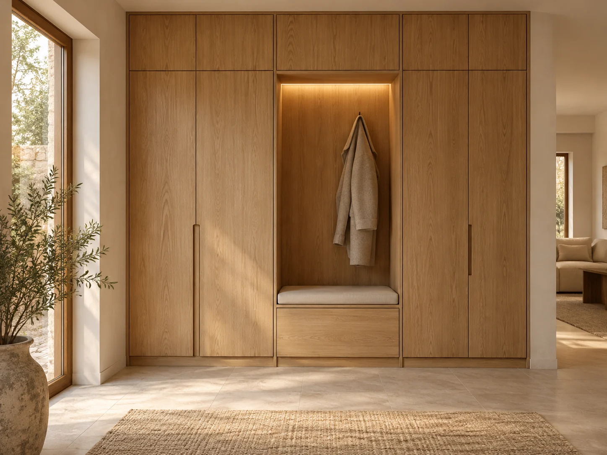
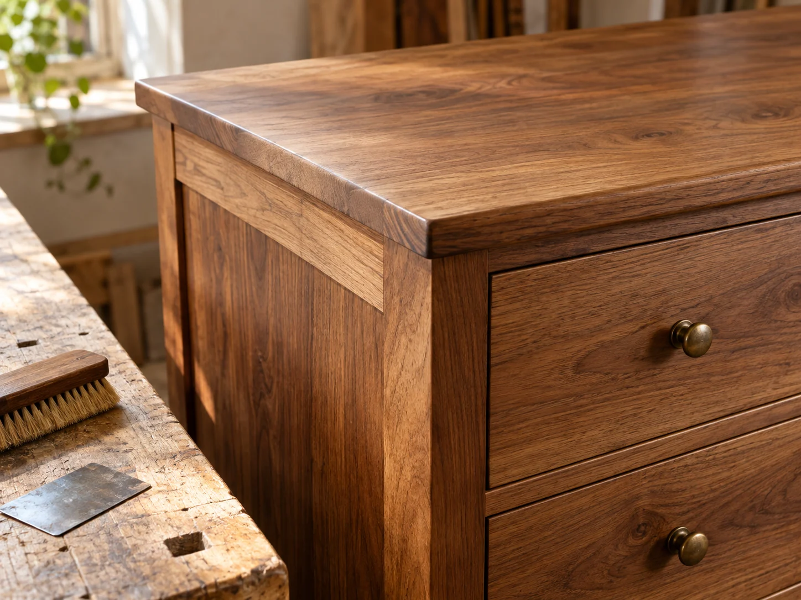

Meble na wymiar.
Kuchnia, szafa, wnęka. Opowiedz o przestrzeni, przechowywaniu i codziennych potrzebach.
Zobacz możliwościProjektujemy i wykonujemy kuchnie, szafy oraz zabudowy dopasowane do wnętrza. Chcesz odnowić istniejący mebel? Wybierz renowację. Opisz swój pomysł lub zakres zmian, żeby rozpocząć rozmowę o realizacji.
Opisz, czego potrzebujesz
Wizualizacja koncepcyjna. Nie przedstawia realizacji dla klienta.
Nowa zabudowa i renowacja mają inne punkty wyjścia. Dlatego prowadzą do różnych pytań i ustaleń.
Kuchnia, szafa, wnęka. Opowiedz o przestrzeni, przechowywaniu i codziennych potrzebach.
Zobacz możliwościKomoda, stół, ulubiony mebel. Najpierw stan i możliwości, potem decyzja o zakresie.
Porozmawiajmy o odnowieniuTrzy autorskie koncepcje pokazują charakter pracowni. Potrzeba, rozwiązanie i materiał — bez udawania wykonanych zleceń.
Widoczne koncepcje: 3.
Dąb, jasny blat i uporządkowane przechowywanie. Wizualizacja pokazuje kierunek projektu, nie wykonaną realizację.

Wysoka zabudowa, wnęka z siedziskiem i rytm frontów. Propozycja organizacji przedpokoju.

Rysunek drewna i detal powierzchni jako punkt wyjścia do rozmowy o odnowieniu. To ilustracja, nie udokumentowana renowacja.
To, co przechowujesz, jak korzystasz z kuchni i czego brakuje we wnętrzu, ma znaczenie dla projektu. Kolor i wykończenie są częścią tej rozmowy.
Przy renowacji zaczynamy od istniejącego mebla: konstrukcji, powierzchni i oczekiwanej zmiany.
Poznaj oba procesyTak, na początek rozmowy. Finalne ustalenia dla nowej zabudowy wymagają pomiaru i doprecyzowania projektu.
Nie można tego obiecać. Znaczenie mają konstrukcja, materiał, uszkodzenia i wcześniejsze powłoki. Najpierw potrzebna jest ocena możliwości.
Zakres, wymiary, materiały, rozwiązania i montaż w nowych meblach; stan oraz zakres prac w renowacji. Samo zdjęcie inspiracji nie jest podstawą pewnej ceny.
Zasady pomiaru, dostawy, montażu lub przewozu mebla do renowacji wymagają osobnego uzgodnienia.
Wybierz nową zabudowę lub renowację. Przygotuj krótki opis i zobacz, jakie informacje pomagają zacząć.